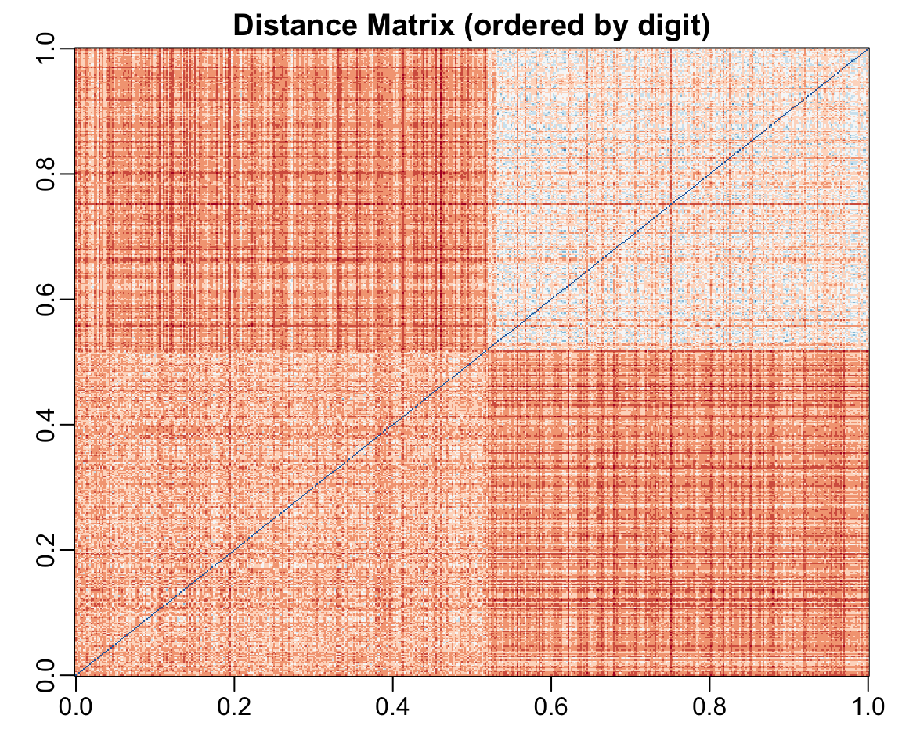
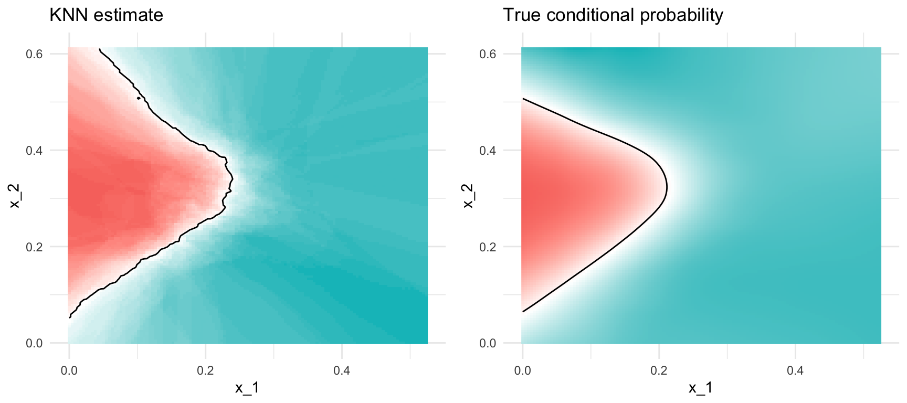

Classification is a supervised learning task where the goal is to predict categorical outcomes. Given a set of features (predictors), we want to assign observations to one of several predefined classes.
Classification problems are ubiquitous in biology and bioengineering:
Diagnosing disease states from biomarkers
Classifying cell types from gene expression
Predicting protein function from sequence
Identifying species from morphological measurements
In this chapter, we focus on K-Nearest Neighbors (KNN), a fundamental classification algorithm that illustrates key concepts applicable to all classification methods. Other classification methods like decision trees, random forests, and support vector machines are covered in Chapter 29.
31.2 Distance: The Foundation of Classification
Many classification algorithms rely on measuring how similar or different observations are. Distance quantifies this similarity—observations that are close together are considered similar.
Euclidean Distance
The most common distance measure is Euclidean distance, the straight-line distance between two points:
For two points in two dimensions: \[
d(A, B) = \sqrt{(A_x - B_x)^2 + (A_y - B_y)^2}
\]
Figure 31.1: Euclidean distance between two points in a Cartesian plane
In one dimension, distance is simply the absolute difference: \[
d(A, B) = |A - B|
\]
Distance in Higher Dimensions
With high-dimensional data (many features), the concept extends naturally. For observations with \(p\) features: \[
d(i, j) = \sqrt{\sum_{k=1}^{p} (x_{ik} - x_{jk})^2}
\]
This is the generalized Euclidean distance—we sum the squared differences across all features.
Example: Distance Between Digits
Let’s compute distances between handwritten digit images using the MNIST dataset:
Each digit image has 784 pixels (features). The labels for the first three observations are:
Code
y[1:3]
[1] 7 2 7
We expect digits of the same type to be closer to each other:
Code
x_1 <- x[1, ]x_2 <- x[2, ]x_3 <- x[3, ]# Distance between two 7sdist_same <-sqrt(sum((x_1 - x_2)^2))# Distance between a 7 and a 2dist_diff_1 <-sqrt(sum((x_1 - x_3)^2))dist_diff_2 <-sqrt(sum((x_2 - x_3)^2))cat("Distance between two 7s:", round(dist_same, 1), "\n")
Distance between two 7s: 3273.4
Code
cat("Distance between 7 and 2:", round(dist_diff_1, 1), "and", round(dist_diff_2, 1), "\n")
Distance between 7 and 2: 2311 and 2635.9
As expected, the two 7s are closer to each other than to the 2.
Computing Distance Matrices
The dist() function efficiently computes pairwise distances:
Code
d <-dist(x)class(d)
[1] "dist"
We can visualize the distance matrix to see clustering patterns:
Code
rafalib::mypar()image(as.matrix(d)[order(y), order(y)],col =rev(RColorBrewer::brewer.pal(9, "RdBu")),main ="Distance Matrix (ordered by digit)")

Figure 31.2: Distance matrix for digit images, ordered by label. Similar digits (same class) cluster together with smaller distances (darker colors).
The block structure reveals that 2s are more similar to other 2s, and 7s are more similar to other 7s.
Other Distance Metrics
Beyond Euclidean distance, other metrics are sometimes appropriate:
Manhattan Distance (L1 norm): Sum of absolute differences \[
d(x_i, x_j) = \sum_{k=1}^{p} |x_{ik} - x_{jk}|
\]
When \(q = 2\), this is Euclidean; when \(q = 1\), this is Manhattan.
31.3 K-Nearest Neighbors (KNN)
The KNN Algorithm
K-Nearest Neighbors is one of the simplest and most intuitive classification algorithms. The idea is straightforward: classify a new observation based on the classes of its nearest neighbors in the training data.
The algorithm:
Choose the number of neighbors \(k\)
For a new observation, find the \(k\) closest training points (using a distance metric)
Assign the class that is most common among these neighbors (majority vote)
For regression problems, predict the average of the neighbors’ values.
Intuition
“Tell me who your neighbors are, and I’ll tell you who you are.”
KNN makes no assumptions about the underlying data distribution—it simply uses proximity to make predictions.
Figure 31.3: K-nearest neighbors classification: the new point (star) is classified based on its k nearest training points
The Effect of K: Bias-Variance Tradeoff
The choice of \(k\) is critical and illustrates the bias-variance tradeoff:
Small k (e.g., k=1): Very flexible decision boundary, low bias but high variance. Prone to overfitting—the boundary follows noise in the training data.
Large k: Smoother decision boundary, higher bias but lower variance. May miss local patterns—prone to underfitting.
Figure 31.4: Effect of k on KNN decision boundaries: small k creates complex boundaries (overfitting risk), large k creates smooth boundaries (underfitting risk)
Notice how k=1 creates a very jagged boundary that follows individual training points, while k=50 creates a smooth boundary that may miss local structure.
Selecting K with Cross-Validation
We choose the optimal \(k\) using cross-validation to estimate generalization performance:
Code
# Split data for validationset.seed(123)test_idx <-sample(1:nrow(train_data), 30)train_subset <- train_data[-test_idx, ]test_subset <- train_data[test_idx, ]k_values <-seq(1, 50, by =2)# Calculate accuraciesaccuracy <-sapply(k_values, function(k) { pred <-knn(train = train_subset[, 1:2],test = test_subset[, 1:2],cl = train_subset$class,k = k)mean(pred == test_subset$class)})train_accuracy <-sapply(k_values, function(k) { pred <-knn(train = train_subset[, 1:2],test = train_subset[, 1:2],cl = train_subset$class,k = k)mean(pred == train_subset$class)})plot(k_values, train_accuracy, type ="l", col ="blue", lwd =2,xlab ="k (number of neighbors)", ylab ="Accuracy",main ="Training vs Test Accuracy", ylim =c(0.5, 1))lines(k_values, accuracy, col ="red", lwd =2)legend("bottomright", c("Training", "Test"), col =c("blue", "red"), lwd =2)
Figure 31.5: Training vs test accuracy as a function of k: training accuracy is perfect at k=1, but test accuracy reveals the true generalization performance
When k=1, training accuracy is perfect—each point is its own nearest neighbor. But test accuracy reveals how well the model actually generalizes.
KNN with the caret Package
The caret package provides a convenient interface for KNN with built-in cross-validation:
Code
library(dslabs)data("mnist_27")# Train KNN with cross-validation to select ktrain_knn <-train(y ~ ., method ="knn",data = mnist_27$train,tuneGrid =data.frame(k =seq(9, 71, 2)))# Best k valuetrain_knn$bestTune
k
30 67
Code
# Test accuracyconfusionMatrix(predict(train_knn, mnist_27$test, type ="raw"), mnist_27$test$y)$overall["Accuracy"]
Accuracy
0.825
Visualizing KNN Decision Boundaries
KNN can capture complex, non-linear decision boundaries:
Code
# Helper function for plotting conditional probabilitiesplot_cond_prob <-function(p_hat =NULL) { tmp <- mnist_27$true_pif (!is.null(p_hat)) { tmp <-mutate(tmp, p = p_hat) } tmp %>%ggplot(aes(x_1, x_2, z = p, fill = p)) +geom_raster(show.legend =FALSE) +scale_fill_gradientn(colors =c("#F8766D", "white", "#00BFC4")) +stat_contour(breaks =c(0.5), color ="black")}p1 <-plot_cond_prob() +ggtitle("True conditional probability")p2 <-plot_cond_prob(predict(train_knn, newdata = mnist_27$true_p, type ="prob")[, 2]) +ggtitle("KNN estimate")gridExtra::grid.arrange(p2, p1, nrow =1)

Figure 31.6: KNN decision boundary compared to the true conditional probability. KNN is flexible enough to capture the non-linear pattern.
31.4 Predictor Space
The predictor space is a conceptual framework for understanding classification algorithms. It consists of all possible values the predictor variables can take.
For the digit classification problem, each observation is a point in 784-dimensional space. Classification algorithms partition this space into regions, each assigned to a class.
Key concepts:
Decision boundary: The surface separating regions assigned to different classes
Neighborhood: The region around a point within a specified distance
Feature scaling: Important because distance calculations are sensitive to scale
Feature Scaling
KNN and other distance-based methods are sensitive to feature scales. A variable ranging from 0-1000 will dominate distance calculations compared to a variable ranging from 0-1.
Always standardize features before applying KNN:
Code
# Standardize featuresx_scaled <-scale(x)# Or use caret's preProcesstrain_knn <-train(y ~ ., method ="knn",data = training_data,preProcess =c("center", "scale"))
31.5 KNN for Regression
KNN can also predict continuous outcomes. Instead of majority voting, we average the neighbors’ values:
Figure 31.7: KNN regression with different values of k: smaller k gives more flexible (wiggly) fits, larger k gives smoother fits
31.6 Advantages and Limitations of KNN
Advantages
KNN offers several appealing properties that make it a valuable tool in the classification toolkit. The algorithm is simple and intuitive—it’s easy to understand the logic and explain predictions to non-technical audiences. Unlike many machine learning methods, KNN has no training phase; all computation happens at prediction time, a property sometimes called “lazy learning.” This makes it trivial to update the model with new training data. The method is non-parametric, making no assumptions about the underlying data distribution, which allows it to adapt to complex patterns in the data. KNN naturally handles multiclass problems without any modification to the basic algorithm—simply take the majority vote among k neighbors regardless of how many classes exist. Finally, KNN can capture complex, non-linear patterns and decision boundaries that linear methods would miss entirely.
Limitations
Despite these strengths, KNN has important limitations that restrict its applicability. The method is computationally expensive for large datasets because each prediction requires computing distances to all training points, which becomes prohibitive as datasets grow. KNN is sensitive to irrelevant features—since all features contribute equally to distance calculations, adding noise variables degrades performance. This sensitivity also means the method requires careful feature scaling; variables on different scales will dominate distance calculations and bias results. The algorithm suffers from the curse of dimensionality: in high-dimensional spaces, all points become approximately equidistant, making the notion of “nearest” neighbors less meaningful. Finally, KNN provides no interpretable model—unlike decision trees or linear models, you cannot easily identify which features are most important for making predictions, limiting its use when interpretability matters.
31.7 Exercises
Exercise Cl.1: Tissue Classification with KNN
Load the tissue_gene_expression dataset. Split the data into training and test sets, then use kNN to predict tissue type. Try values of \(k = 1, 3, 5, 7, 9, 11\) and report which gives the best test accuracy.
We previously used logistic regression to predict sex from height. Use kNN to do the same. Use cross-validation to select the optimal \(k\) and compare the F1 score to the logistic regression result of approximately 0.6.
Exercise Cl.3: Distance Metrics
For the digit classification problem with 2s and 7s, experiment with different distance metrics (Euclidean vs Manhattan). Does the choice of metric affect classification accuracy?
Exercise Cl.4: Weighted KNN
Implement weighted KNN, where closer neighbors contribute more to the prediction. Compare performance to standard KNN.
31.8 Summary
Distance measures similarity between observations and is fundamental to many classification methods
K-Nearest Neighbors (KNN) classifies observations based on the majority class of nearby training points
The choice of k represents a bias-variance tradeoff: small k is flexible but noisy, large k is smooth but may miss local patterns
Cross-validation should be used to select the optimal k
Feature scaling is critical for distance-based methods
KNN is simple and effective but can be slow for large datasets and suffers from the curse of dimensionality
The predictor space framework helps visualize how classification algorithms partition the feature space
31.9 Additional Resources
James et al. (2023) - Comprehensive treatment of KNN and classification
Thulin (2025) - Modern statistics with R including machine learning
The caret package vignette for practical classification workflows
James, Gareth, Daniela Witten, Trevor Hastie, and Robert Tibshirani. 2023. An Introduction to Statistical Learning with Applications in r. 2nd ed. Springer. https://www.statlearning.com.
# Classification Methods {#sec-classification}```{r}#| echo: false#| message: falselibrary(tidyverse)library(class)library(caret)theme_set(theme_minimal())```## Introduction to ClassificationClassification is a supervised learning task where the goal is to predict categorical outcomes. Given a set of features (predictors), we want to assign observations to one of several predefined classes.Classification problems are ubiquitous in biology and bioengineering:- Diagnosing disease states from biomarkers- Classifying cell types from gene expression- Predicting protein function from sequence- Identifying species from morphological measurementsIn this chapter, we focus on **K-Nearest Neighbors (KNN)**, a fundamental classification algorithm that illustrates key concepts applicable to all classification methods. Other classification methods like decision trees, random forests, and support vector machines are covered in @sec-statistical-learning.## Distance: The Foundation of ClassificationMany classification algorithms rely on measuring how similar or different observations are. **Distance** quantifies this similarity—observations that are close together are considered similar.### Euclidean DistanceThe most common distance measure is **Euclidean distance**, the straight-line distance between two points:For two points in two dimensions:$$d(A, B) = \sqrt{(A_x - B_x)^2 + (A_y - B_y)^2}$$```{r}#| label: fig-euclidean-2d#| fig-cap: "Euclidean distance between two points in a Cartesian plane"#| fig-width: 5#| fig-height: 5rafalib::mypar()plot(c(0, 1, 1), c(0, 0, 1), pch =16, cex =2,xaxt ="n", yaxt ="n", xlab ="", ylab ="", bty ="n",xlim =c(-0.25, 1.25), ylim =c(-0.25, 1.25))lines(c(0, 1, 1, 0), c(0, 0, 1, 0))text(0, .2, expression(paste('(A'[x]*',A'[y]*')')), cex =1.5)text(1, 1.2, expression(paste('(B'[x]*',B'[y]*')')), cex =1.5)text(-0.1, 0, "A", cex =2)text(1.1, 1, "B", cex =2)```In one dimension, distance is simply the absolute difference:$$d(A, B) = |A - B|$$### Distance in Higher DimensionsWith high-dimensional data (many features), the concept extends naturally. For observations with $p$ features:$$d(i, j) = \sqrt{\sum_{k=1}^{p} (x_{ik} - x_{jk})^2}$$This is the generalized Euclidean distance—we sum the squared differences across all features.### Example: Distance Between DigitsLet's compute distances between handwritten digit images using the MNIST dataset:```{r}library(dslabs)if (!exists("mnist")) mnist <-read_mnist()set.seed(1995)ind <-which(mnist$train$labels %in%c(2, 7)) %>%sample(500)x <- mnist$train$images[ind, ]y <- mnist$train$labels[ind]```Each digit image has 784 pixels (features). The labels for the first three observations are:```{r}y[1:3]```We expect digits of the same type to be closer to each other:```{r}x_1 <- x[1, ]x_2 <- x[2, ]x_3 <- x[3, ]# Distance between two 7sdist_same <-sqrt(sum((x_1 - x_2)^2))# Distance between a 7 and a 2dist_diff_1 <-sqrt(sum((x_1 - x_3)^2))dist_diff_2 <-sqrt(sum((x_2 - x_3)^2))cat("Distance between two 7s:", round(dist_same, 1), "\n")cat("Distance between 7 and 2:", round(dist_diff_1, 1), "and", round(dist_diff_2, 1), "\n")```As expected, the two 7s are closer to each other than to the 2.### Computing Distance MatricesThe `dist()` function efficiently computes pairwise distances:```{r}d <-dist(x)class(d)```We can visualize the distance matrix to see clustering patterns:```{r}#| label: fig-dist-matrix#| fig-cap: "Distance matrix for digit images, ordered by label. Similar digits (same class) cluster together with smaller distances (darker colors)."#| fig-width: 6#| fig-height: 5rafalib::mypar()image(as.matrix(d)[order(y), order(y)],col =rev(RColorBrewer::brewer.pal(9, "RdBu")),main ="Distance Matrix (ordered by digit)")```The block structure reveals that 2s are more similar to other 2s, and 7s are more similar to other 7s.### Other Distance MetricsBeyond Euclidean distance, other metrics are sometimes appropriate:**Manhattan Distance** (L1 norm): Sum of absolute differences$$d(x_i, x_j) = \sum_{k=1}^{p} |x_{ik} - x_{jk}|$$**Minkowski Distance** (generalized):$$d(x_i, x_j) = \left(\sum_{k=1}^{p} |x_{ik} - x_{jk}|^q\right)^{1/q}$$When $q = 2$, this is Euclidean; when $q = 1$, this is Manhattan.## K-Nearest Neighbors (KNN)### The KNN Algorithm**K-Nearest Neighbors** is one of the simplest and most intuitive classification algorithms. The idea is straightforward: classify a new observation based on the classes of its nearest neighbors in the training data.The algorithm:1. Choose the number of neighbors $k$2. For a new observation, find the $k$ closest training points (using a distance metric)3. Assign the class that is most common among these neighbors (majority vote)For regression problems, predict the average of the neighbors' values.::: {.callout-note}## Intuition"Tell me who your neighbors are, and I'll tell you who you are."KNN makes no assumptions about the underlying data distribution—it simply uses proximity to make predictions.:::### KNN for Classification```{r}#| label: fig-knn-concept#| fig-cap: "K-nearest neighbors classification: the new point (star) is classified based on its k nearest training points"#| fig-width: 7#| fig-height: 5# Simulate two-class dataset.seed(42)n <-100class1 <-data.frame(x1 =rnorm(n/2, mean =2, sd =1),x2 =rnorm(n/2, mean =2, sd =1),class ="A")class2 <-data.frame(x1 =rnorm(n/2, mean =4, sd =1),x2 =rnorm(n/2, mean =4, sd =1),class ="B")train_data <-rbind(class1, class2)# New point to classifynew_point <-data.frame(x1 =3.2, x2 =3.5)# Find 5 nearest neighborsdistances <-sqrt((train_data$x1 - new_point$x1)^2+ (train_data$x2 - new_point$x2)^2)nearest <-order(distances)[1:5]# Plotplot(train_data$x1, train_data$x2,col =ifelse(train_data$class =="A", "blue", "red"),pch =16, xlab ="Feature 1", ylab ="Feature 2",main ="K-Nearest Neighbors (k=5)")points(new_point$x1, new_point$x2, pch =8, cex =2, lwd =2)# Highlight nearest neighborspoints(train_data$x1[nearest], train_data$x2[nearest],cex =2, col =ifelse(train_data$class[nearest] =="A", "blue", "red"))legend("topleft", c("Class A", "Class B", "New point"),col =c("blue", "red", "black"), pch =c(16, 16, 8))```### The Effect of K: Bias-Variance TradeoffThe choice of $k$ is critical and illustrates the **bias-variance tradeoff**:- **Small k** (e.g., k=1): Very flexible decision boundary, low bias but high variance. Prone to overfitting—the boundary follows noise in the training data.- **Large k**: Smoother decision boundary, higher bias but lower variance. May miss local patterns—prone to underfitting.```{r}#| label: fig-knn-k-comparison#| fig-cap: "Effect of k on KNN decision boundaries: small k creates complex boundaries (overfitting risk), large k creates smooth boundaries (underfitting risk)"#| fig-width: 9#| fig-height: 4# Create a grid for visualizationx1_grid <-seq(0, 6, length.out =100)x2_grid <-seq(0, 6, length.out =100)grid <-expand.grid(x1 = x1_grid, x2 = x2_grid)par(mfrow =c(1, 3))for (k_val inc(1, 15, 50)) {# Predict on grid pred <-knn(train = train_data[, 1:2],test = grid,cl = train_data$class,k = k_val)# Plot decision regionsplot(grid$x1, grid$x2,col =ifelse(pred =="A", rgb(0, 0, 1, 0.1), rgb(1, 0, 0, 0.1)),pch =15, cex =0.5, xlab ="Feature 1", ylab ="Feature 2",main =paste("k =", k_val))points(train_data$x1, train_data$x2,col =ifelse(train_data$class =="A", "blue", "red"), pch =16)}```Notice how k=1 creates a very jagged boundary that follows individual training points, while k=50 creates a smooth boundary that may miss local structure.### Selecting K with Cross-ValidationWe choose the optimal $k$ using cross-validation to estimate generalization performance:```{r}#| label: fig-knn-cv#| fig-cap: "Training vs test accuracy as a function of k: training accuracy is perfect at k=1, but test accuracy reveals the true generalization performance"#| fig-width: 7#| fig-height: 5# Split data for validationset.seed(123)test_idx <-sample(1:nrow(train_data), 30)train_subset <- train_data[-test_idx, ]test_subset <- train_data[test_idx, ]k_values <-seq(1, 50, by =2)# Calculate accuraciesaccuracy <-sapply(k_values, function(k) { pred <-knn(train = train_subset[, 1:2],test = test_subset[, 1:2],cl = train_subset$class,k = k)mean(pred == test_subset$class)})train_accuracy <-sapply(k_values, function(k) { pred <-knn(train = train_subset[, 1:2],test = train_subset[, 1:2],cl = train_subset$class,k = k)mean(pred == train_subset$class)})plot(k_values, train_accuracy, type ="l", col ="blue", lwd =2,xlab ="k (number of neighbors)", ylab ="Accuracy",main ="Training vs Test Accuracy", ylim =c(0.5, 1))lines(k_values, accuracy, col ="red", lwd =2)legend("bottomright", c("Training", "Test"), col =c("blue", "red"), lwd =2)```When k=1, training accuracy is perfect—each point is its own nearest neighbor. But test accuracy reveals how well the model actually generalizes.### KNN with the caret PackageThe `caret` package provides a convenient interface for KNN with built-in cross-validation:```{r}#| message: falselibrary(dslabs)data("mnist_27")# Train KNN with cross-validation to select ktrain_knn <-train(y ~ ., method ="knn",data = mnist_27$train,tuneGrid =data.frame(k =seq(9, 71, 2)))# Best k valuetrain_knn$bestTune# Test accuracyconfusionMatrix(predict(train_knn, mnist_27$test, type ="raw"), mnist_27$test$y)$overall["Accuracy"]```### Visualizing KNN Decision BoundariesKNN can capture complex, non-linear decision boundaries:```{r}#| label: fig-knn-boundary#| fig-cap: "KNN decision boundary compared to the true conditional probability. KNN is flexible enough to capture the non-linear pattern."#| fig-width: 9#| fig-height: 4# Helper function for plotting conditional probabilitiesplot_cond_prob <-function(p_hat =NULL) { tmp <- mnist_27$true_pif (!is.null(p_hat)) { tmp <-mutate(tmp, p = p_hat) } tmp %>%ggplot(aes(x_1, x_2, z = p, fill = p)) +geom_raster(show.legend =FALSE) +scale_fill_gradientn(colors =c("#F8766D", "white", "#00BFC4")) +stat_contour(breaks =c(0.5), color ="black")}p1 <-plot_cond_prob() +ggtitle("True conditional probability")p2 <-plot_cond_prob(predict(train_knn, newdata = mnist_27$true_p, type ="prob")[, 2]) +ggtitle("KNN estimate")gridExtra::grid.arrange(p2, p1, nrow =1)```## Predictor SpaceThe **predictor space** is a conceptual framework for understanding classification algorithms. It consists of all possible values the predictor variables can take.For the digit classification problem, each observation is a point in 784-dimensional space. Classification algorithms partition this space into regions, each assigned to a class.Key concepts:- **Decision boundary**: The surface separating regions assigned to different classes- **Neighborhood**: The region around a point within a specified distance- **Feature scaling**: Important because distance calculations are sensitive to scale::: {.callout-warning}## Feature ScalingKNN and other distance-based methods are sensitive to feature scales. A variable ranging from 0-1000 will dominate distance calculations compared to a variable ranging from 0-1.Always standardize features before applying KNN:```{r}#| eval: false# Standardize featuresx_scaled <-scale(x)# Or use caret's preProcesstrain_knn <-train(y ~ ., method ="knn",data = training_data,preProcess =c("center", "scale"))```:::## KNN for RegressionKNN can also predict continuous outcomes. Instead of majority voting, we average the neighbors' values:$$\hat{y} = \frac{1}{k} \sum_{x_i \in N_k(x)} y_i$$where $N_k(x)$ is the set of k nearest neighbors to x.```{r}#| label: fig-knn-regression#| fig-cap: "KNN regression with different values of k: smaller k gives more flexible (wiggly) fits, larger k gives smoother fits"#| fig-width: 9#| fig-height: 4# Generate non-linear dataset.seed(42)n <-100x <-seq(0, 2*pi, length.out = n)y <-sin(x) +rnorm(n, sd =0.3)reg_data <-data.frame(x = x, y = y)par(mfrow =c(1, 3))for (k_val inc(3, 10, 30)) {# Predict using KNN regression x_grid <-seq(0, 2*pi, length.out =200)# Manual KNN regression pred <-sapply(x_grid, function(xnew) { dists <-abs(reg_data$x - xnew) neighbors <-order(dists)[1:k_val]mean(reg_data$y[neighbors]) })plot(x, y, pch =16, col ="gray60", main =paste("k =", k_val))lines(x_grid, pred, col ="blue", lwd =2)lines(x_grid, sin(x_grid), col ="red", lwd =2, lty =2)legend("topright", c("KNN fit", "True function"),col =c("blue", "red"), lty =c(1, 2), lwd =2, cex =0.7)}```## Advantages and Limitations of KNN### AdvantagesKNN offers several appealing properties that make it a valuable tool in the classification toolkit. The algorithm is **simple and intuitive**—it's easy to understand the logic and explain predictions to non-technical audiences. Unlike many machine learning methods, KNN has **no training phase**; all computation happens at prediction time, a property sometimes called "lazy learning." This makes it trivial to update the model with new training data. The method is **non-parametric**, making no assumptions about the underlying data distribution, which allows it to adapt to complex patterns in the data. KNN **naturally handles multiclass problems** without any modification to the basic algorithm—simply take the majority vote among k neighbors regardless of how many classes exist. Finally, KNN can **capture complex, non-linear patterns** and decision boundaries that linear methods would miss entirely.### LimitationsDespite these strengths, KNN has important limitations that restrict its applicability. The method is **computationally expensive for large datasets** because each prediction requires computing distances to all training points, which becomes prohibitive as datasets grow. KNN is **sensitive to irrelevant features**—since all features contribute equally to distance calculations, adding noise variables degrades performance. This sensitivity also means the method **requires careful feature scaling**; variables on different scales will dominate distance calculations and bias results. The algorithm suffers from the **curse of dimensionality**: in high-dimensional spaces, all points become approximately equidistant, making the notion of "nearest" neighbors less meaningful. Finally, KNN provides **no interpretable model**—unlike decision trees or linear models, you cannot easily identify which features are most important for making predictions, limiting its use when interpretability matters.## Exercises::: {.callout-note}### Exercise Cl.1: Tissue Classification with KNN1. Load the `tissue_gene_expression` dataset. Split the data into training and test sets, then use kNN to predict tissue type. Try values of $k = 1, 3, 5, 7, 9, 11$ and report which gives the best test accuracy.```{r}#| eval: falsedata("tissue_gene_expression")dim(tissue_gene_expression$x)table(tissue_gene_expression$y)```:::::: {.callout-note}### Exercise Cl.2: Sex Prediction from Height2. We previously used logistic regression to predict sex from height. Use kNN to do the same. Use cross-validation to select the optimal $k$ and compare the F1 score to the logistic regression result of approximately 0.6.:::::: {.callout-note}### Exercise Cl.3: Distance Metrics3. For the digit classification problem with 2s and 7s, experiment with different distance metrics (Euclidean vs Manhattan). Does the choice of metric affect classification accuracy?:::::: {.callout-note}### Exercise Cl.4: Weighted KNN4. Implement weighted KNN, where closer neighbors contribute more to the prediction. Compare performance to standard KNN.:::## Summary- **Distance** measures similarity between observations and is fundamental to many classification methods- **K-Nearest Neighbors (KNN)** classifies observations based on the majority class of nearby training points- The **choice of k** represents a bias-variance tradeoff: small k is flexible but noisy, large k is smooth but may miss local patterns- **Cross-validation** should be used to select the optimal k- **Feature scaling** is critical for distance-based methods- KNN is simple and effective but can be slow for large datasets and suffers from the curse of dimensionality- The **predictor space** framework helps visualize how classification algorithms partition the feature space## Additional Resources- @james2023islr - Comprehensive treatment of KNN and classification- @thulin2025msr - Modern statistics with R including machine learning- The `caret` package vignette for practical classification workflows